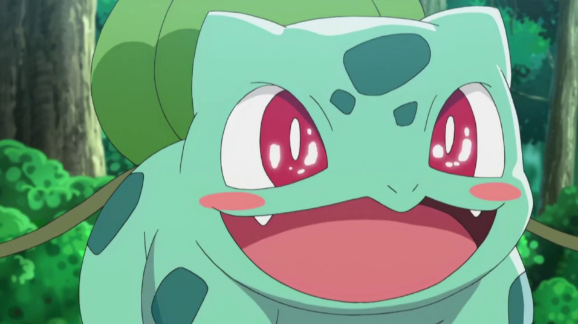
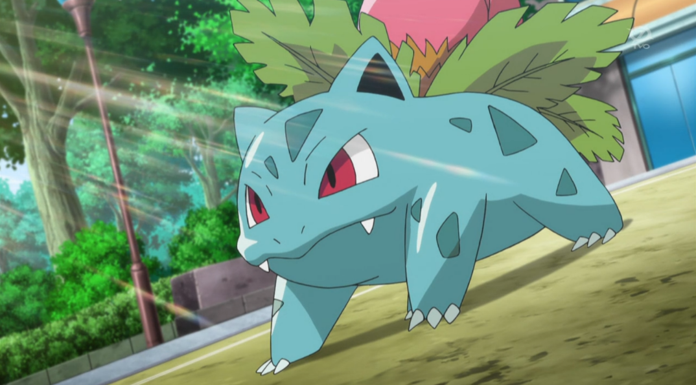
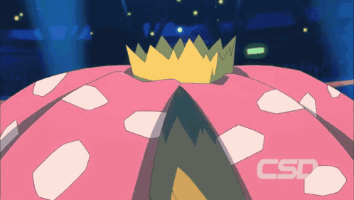

Bulbasaur
Um pequeno Pokémon quadrúpede com uma planta bulbosa nas costas. À medida que cresce, o bulbo floresce.

Ivysaur
Ivysaur é maior e mais robusto, com uma flor parcialmente desabrochada nas costas. Ele ganha força e habilidades aprimoradas à medida que a flor cresce e consegue isso pois passa mais tempo no sol, com isso vai ficando mais forte e lento.

Venusaur
A evolução final ocorre no nível 32, quando Ivysaur se transforma em Venusaur. Venusaur é um grande Pokémon com uma flor totalmente desabrochada nas costas. Ele é incrivelmente poderoso e pode usar a flor para realizar ataques devastadores.